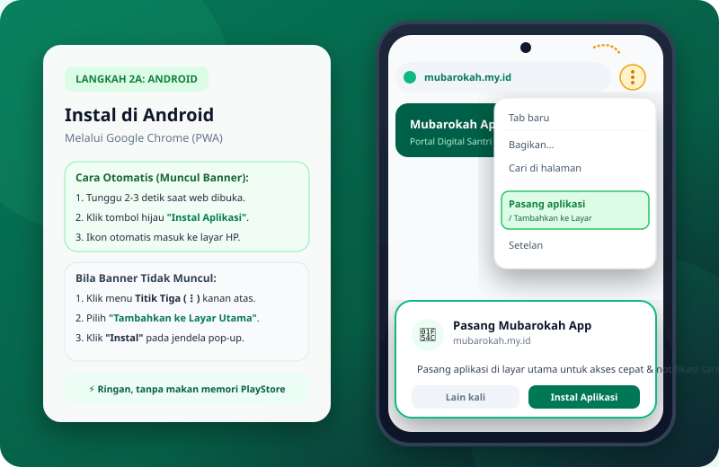
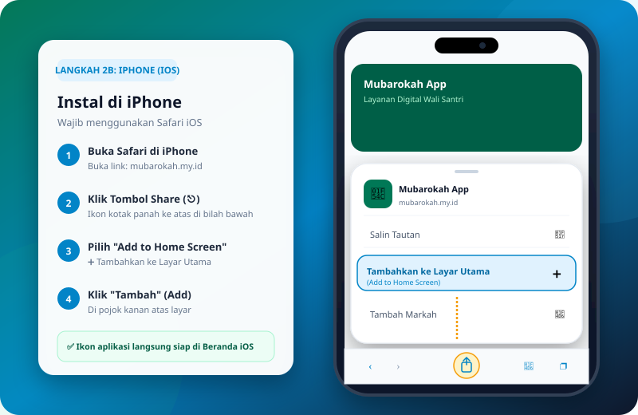
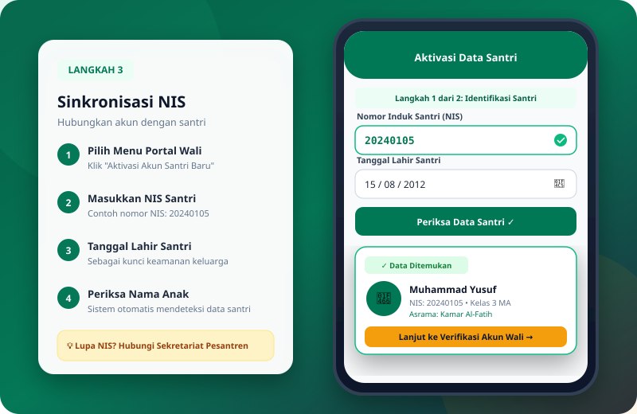
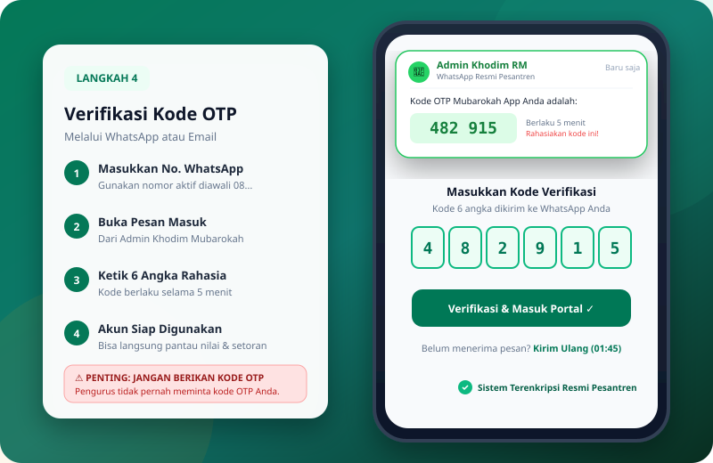

PPTQ ROUDLOTUL MUBAROKAH berkomitmen mencetak generasi berilmu, berakhlak mulia, mutqin berstandar sanad, dan berprestasi dengan landasan Al-Qur'an dan Sunnah.
30 JuzTARGET HAFALAN TAHFIDZ
100%ASATIDZ BERSERTIFIKAT
UnggulSTANDAR KARAKTER ISLAMI
Halaqah Tahfidz
PPTQ Roudlotul Mubarokah
Legalitas Formal & Sanad Keilmuan Resmi
Terverifikasi
Landasan hukum sah negara dan jaminan mutu ijazah kelulusan santri di bawah naungan Kementerian Agama RI.
Diakui Nasional & Bersanad
Kemenag RI
Izin Operasional Pesantren
NSPP: 510033210088
Izin resmi Kementerian Agama RI untuk jenjang kepesantrenan dan madrasah terpadu.
Status Aktif & Terdaftar
Akreditasi
Standar Kelayakan Mutu
Peringkat A (Unggul)
Penilaian tertinggi BAN-PDM & Kemenag menjamin standar mutu kurikulum, sarana, dan lulusan.
Predikat Mutu Unggul
Kemenkumham
Keabsahan Lembaga Negara
SK Kemenkumham RI
Kelembagaan berpayung hukum sah dengan kepemilikan aset yayasan resmi di lembaran negara.
Perlindungan Hukum Sah
Sanad Tahfidz
Silsilah Keilmuan Al-Qur'an
Muttashil Rasulullah ﷺ
Talaqqi bersanad shahih metode Yanbu'a diasuh langsung oleh Masyayikh hafizhahumullah.
Ijazah & Sanad Bersambung
Pendiri & Pengasuh
SAMBUTAN PENGASUH PESANTREN
Mendidik Santri dengan Al-Qur'an, Mengukir Keberkahan dengan Sanad
"Pendidikan pesantren bukan sekadar transfer ilmu pengetahuan, melainkan penanaman adab dan integritas moral yang berakar pada keteladanan salafus shalih dan keberkahan sanad Al-Qur'an yang tersambung hingga Baginda Nabi Muhammad ﷺ."
Nyai Hj. Nasichatul Fuadah, AH.
Pendiri & Pengasuh PPTQ Roudlotul Mubarokah Demak
1 / 3
Demak, Jawa Tengah, Indonesia
Lingkungan Asri, Aman & Islami
PROFIL PESANTREN
PPTQ ROUDLOTUL MUBAROKAH
Pondok Pesantren Tahfidzul Qur'an Roudlotul Mubarokah adalah lembaga pendidikan Islam terpadu yang berdedikasi melahirkan generasi penghafal Al-Qur'an mutqin bersanad, berakhlak mulia, dan siap memimpin peradaban dengan landasan Al-Qur'an dan Sunnah.
Berlokasi di kawasan asri Kabupaten Demak, Jawa Tengah, kami memadukan keunggulan sanad tahfidz Yanbu'a dengan kurikulum Kementerian Agama RI, pembiasaan adab salafus shalih, penguasaan bahasa internasional, dan literasi teknologi modern.
Menyelenggarakan halaqah tahfidz intensif dengan sanad muttashil dan talaqqi mutqin.
Mengintegrasikan kurikulum formal Kemenag RI dan kitab kuning salafus shalih secara komprehensif.
Membina pembiasaan adab, kemandirian asrama, dan literasi teknologi modern santri selama 24 jam.
Berorientasi pada Adab, Kemandirian, dan Mutqin Hakiki
4 PROGRAM UNGGULAN
Membina Potensi, Mengukir Prestasi
MA Tahfidz
MA Tahfidz
Pendidikan Menengah Atas unggulan memadukan kurikulum nasional dan nilai-nilai Al-Qur'an.
Lihat Kurikulum
Anak-Anak
Pesantren Tahfidz Anak
Program khusus hafalan Al-Qur'an untuk anak-anak dengan metode seru dan menyenangkan.
Lihat Kurikulum
Reguler Putra Putri
Pesantren Reguler Putra Putri
Program intensif tahfidz dan pendalaman kitab kuning untuk santri dewasa putra.
Lihat Kurikulum
Tahfidz Dewasa
Pesantren Tahfidz Dewasa
Program intensif tahfidz Al-Qur'an dan fiqih wanita untuk santri dewasa.
Lihat Kurikulum
KURIKULUM UNGGULAN & TAHFIDZ BERSANAD
4 Tahap Terpadu Menuju Hafalan Mutqin Bersanad
Kurikulum berjenjang dan aktual berstandar sanad muttashil yang terintegrasi langsung dengan sistem digitalisasi Mubarokah App, menjamin pemantauan perkembangan santri secara transparan dan terukur dari rumah.
1
Tingkat Persiapan
Jilid 1 s.d. 5
Bimbingan Dasar Metode Yanbu'a (Jilid 1–5)
Dikhususkan untuk santri yang belum lancar membaca Al-Qur'an. Pembinaan intensif pengenalan makhorijul huruf dasar, kelancaran mengeja, dan tartil secara bertahap dengan metode ramah anak.
Dibimbing langsung oleh Ustadz/Ustadzah Bersertifikat
Ujian Kenaikan Jilid
2
Tingkat Lanjut & Fondasi
Jilid 6 & 7
Bimbingan Tajwid & Ghorib Metode Yanbu'a (Jilid 6–7)
Pendalaman dengan cara menghafal kaidah materi Tajwid & bacaan Ghorib (ayat musykilat). Menjadi pondasi utama yang wajib dikuasai sebelum melangkah ke tingkat Bin Nadhor 30 Juz.
Wisuda & Syahadah Khatam Yanbu'a
Pemberian ijazah kelulusan resmi khatam Jilid 1 s.d. 7 berstandar pusat
Dibimbing langsung oleh Ustadz/Ustadzah Bersertifikat Resmi
3
Fashahah & Sifatul Huruf
Khatam 30 Juz Bin Nadhor
Bimbingan Tahsin Bin Nadhor 30 Juz
Menuntaskan bacaan Al-Qur'an 30 juz penuh dengan melihat mushaf secara fasih, tartil, dan presisi tinggi sesuai kaidah Makhorijul & Sifatul Huruf standar para imam qiro'ah.
Wisuda & Syahadah Khatam Al-Qur'an 30 Juz Bin Nadhor
Sertifikasi bacaan fasih 30 juz berstandar sanad sebelum melangkah ke hafalan bil ghoib
Dibimbing langsung oleh Ustadz/Ustadzah Bersanad Tahsin & Tahfidz 30 Juz
Puncak Kurikulum Tahfidz
Hafalan Mutqin 30 Juz
Bimbingan Tahfidz Al-Qur'an 30 Juz Mutqin
Program tahfidz intensif menuju hafalan mutqin bersanad 30 juz penuh bil ghoib, dengan sistem setoran terjadwal, tasmi' bertahap, dan penguatan adab penghafal Al-Qur'an.
Dibimbing Langsung Oleh:
Sanad Muttashil
Ibu Nyai Hj. Nasichatul Fuadah, AH.
Pengasuh & Pembimbing Tahfidz
Sanad Tahfidz 30 Juz
Umi Robiatul Awaliyah, AH.
Pengasuh & Pembimbing Tahfidz
Sanad Tahfidz 30 Juz
Mata Rantai Sanad Tahfidz Muttashil (bersambung tanpa putus) sampai kepada Rasulullah SAW.
Penganugerahan Syahadah Sanad resmi setelah menyelesaikan tasmi' bil ghoib 30 juz
Sistem Terpadu & Aktual
Pantau Progres dari Rumah Lewat Mubarokah App
Setiap tetes perjuangan santri dicatat harian secara real-time. Wali santri dapat memantau capaian target, riwayat setoran, dan estimasi waktu khatam langsung dari ponsel di mana pun berada.
Menampilkan 6 profil pengajar yang bergeser pelan secara kontinu (Arahkan kursor untuk jeda)
Karakter
Wahyuni Arida Agustina, S.Pd
Guru PPKn
Sosial
Emi Sulastri, S.Pd
Guru IPS
Bahasa
Susriandi, S.Pd
Guru Bahasa Indonesia
Bahasa
Arsyad Edi, SS
Guru Bahasa Inggris
TIK & Lab
Hasbullah, S.Kom
Guru Informatika
Sains
Aidiyah, S.Pd
Guru Matematika
Karakter
Wahyuni Arida Agustina, S.Pd
Guru PPKn
Sosial
Emi Sulastri, S.Pd
Guru IPS
Bahasa
Susriandi, S.Pd
Guru Bahasa Indonesia
Bahasa
Arsyad Edi, SS
Guru Bahasa Inggris
TIK & Lab
Hasbullah, S.Kom
Guru Informatika
Sains
Aidiyah, S.Pd
Guru Matematika
FASILITAS LENGKAP
Fasilitas Penunjang Pendidikan
Lingkungan belajar yang representatif, asri, nyaman, dan mendukung fokus hafalan Al-Qur'an santri selama 24 jam.
Pusat Ibadah
Masjid Jami' 2 Lantai
Pusat shalat berjamaah 5 waktu, qiyamul lail, serta halaqah tahfidz dan tasmi' Al-Qur'an berkapasitas 1.500 jamaah.
Sejuk & NyamanSound System Terpadu
Lihat Detail
Hunian & Asrama
Asrama Santri Sehat
Kompleks asrama putra dan putri terpisah dengan ventilasi optimal, lemari seragam, dan pengawasan musyrif 24 jam.
Musyrif 24 JamRapi & Terawat
Lihat Detail
Ruang Belajar
Ruang Kelas & Lab Digital
Ruang kelas representatif ber-AC, proyektor interaktif, dan laboratorium komputer untuk pembelajaran digital terpadu.
Smart LearningAkses Internet
Lihat Detail
Kesehatan & Gizi
Poskestren & Dapur Gizi
Layanan medis pertolongan pertama santri dan penyediaan konsumsi 3 kali sehari dengan standar higienis dan gizi seimbang.
Tanggap MedisMenu Higienis
Lihat Detail
Rutinitas & Pembiasaan
Satu Hari di PPTQ Roudlotul Mubarokah
03.30 - 06.00 WIB
Qiyamul Lail & Halaqah Shubuh
Bangun malam, shalat tahajjud, shalat shubuh berjamaah, dan setoran hafalan baru (*sabaq*).
07.00 - 13.00 WIB
Sekolah Formal Kemenag
Pembelajaran kurikulum nasional di Madrasah Aliyah Tahfidz, sains, sosial, dan keagamaan.
15.30 - 17.00 WIB
Sorogan Kitab & Muroja'ah
Kajian kitab kuning salafus shalih, tajwid, nahwu sharaf, dan pengulangan hafalan (*sabqi*).
18.00 - 21.30 WIB
Maghrib, Isya' & Mudzakarah
Tasmi' berpasangan, pendalaman hafalan malam (*manzil*), dan istirahat malam teratur.
JAMINAN KEAMANAN & KENYAMANAN SANTRI
Pesantren Ramah Santri & Bebas Perundungan
Menitipkan buah hati adalah amanah besar bagi orang tua. Kami berkomitmen penuh menciptakan lingkungan asrama yang penuh kasih sayang, beradab mulia, dan menjamin perlindungan fisik serta mental setiap santri selama 24 jam.
Zero Tolerance Bullying
Pemberlakuan tata tertib tegas tanpa kompromi terhadap perundungan fisik, verbal, maupun relasional (senioritas). Membiasakan budaya saling menyayangi antar-santri.
Pakta Integritas Asrama
Musyrif Asrama 24 Jam
Setiap kamar didampingi wali kamar/musyrif yang menetap satu kompleks asrama. Presensi rutin dan kontrol aktivitas dari shubuh hingga istirahat malam.
Pengawasan Intensif
Bimbingan & Adaptasi Empatik
Pendampingan khusus masa adaptasi bagi santri baru agar nyaman tanpa kecemasan rindu rumah (*homesick*). Asatidz konselor siap mendengar keluh kesah santri secara privat.
Kenyamanan Mental Santri
Kanal Konsultasi Wali Santri
Akses komunikasi berkala dengan bagian pengasuhan untuk mengetahui kabar kesehatan dan perkembangan kepribadian ananda secara transparan dan responsif.
“Bukan termasuk golongan kami orang yang tidak menyayangi yang lebih muda di antara kami dan tidak menghormati yang lebih tua di antara kami.”
(HR. At-Tirmidzi No. 1919)
AMANAH & KETENANGAN HATI ORANG TUA
Kiprah Nyata & Pengakuan Tulus
Dengarkan kisah ketenangan hati para orang tua dan perjalanan santri meraih prestasi dunia-akhirat berkat bimbingan Al-Qur'an bersanad di PPTQ Roudlotul Mubarokah.
4.9 / 5.0Kepuasan Wali Santri
100%Sanad Mutqin Yanbua
300+Alumni Bersebaran
24 JamPengasuhan Terpadu
H. Ahmad Fauzi, S.E.
Wali Santri MA Tahfidz
Semarang, Jawa Tengah
5.0
"Alhamdulillah, putra kami tidak hanya mengkhatamkan hafalan 30 juz mutqin berstandar sanad, tapi yang paling membuat kami terharu adalah adab kesantunannya saat liburan di rumah. Beliau selalu bangun sebelum subuh, memimpin tilawah adik-adiknya, dan sangat mandiri."
Hafal 30 Juz & Mandiri
Hj. Siti Nurhaliza, M.Pd.
Wali Santri Tahfidz Anak
Kudus, Jawa Tengah
5.0
"Awalnya kami khawatir menitipkan anak usia SD di pondok. Namun metode tahsin Yanbua dan kehangatan para asatidz di PPTQ Roudlotul Mubarokah membuat anak saya merasa seperti di rumah sendiri. Belajar Al-Qur'an jadi kegembiraan, bukan beban."
Metode Ramah Anak & Telaten
Ust. M. Syukron Habib, Lc.
Alumni Angkatan 2021
Al-Azhar Kairo, Mesir
5.0
"Pondasi nahwu-sharaf, tasmi' bil-ghoib, serta hafalan Al-Qur'an bersanad dari PPTQ Roudlotul Mubarokah menjadi bekal utama saya saat mengikuti seleksi beasiswa kuliah ke Universitas Al-Azhar, Mesir. Sanad yang terjaga membuka banyak kemudahan."
Beasiswa Universitas Al-Azhar
Drs. H. Mulyono Santoso
Wali Santri Reguler Putra
Demak, Jawa Tengah
5.0
"Kombinasi kurikulum kitab kuning salafiyah dan pendidikan formal di sini sangat seimbang. Pengawasan kesehatan dan makanan santri juga sangat terjamin. Kami sebagai orang tua merasa sangat tenang dan bersyukur atas amanah ini."
Kitab Salaf & Gizi Terjamin
dr. Zahra Fathimatuz Zahra
Alumni MA Tahfidz Putri
Fakultas Kedokteran UGM
5.0
"Menjadi santri tahfidz tidak menghalangi cita-cita saya di bidang sains dan kedokteran. Di pondok saya diajarkan manajemen waktu, ketahanan mental, dan konsentrasi tinggi, sehingga saya mampu lulus seleksi Kedokteran PTN sambil tetap menjaga hafalan."
Dokter Muslimah & Hafidzah
Muhammad Riza Ashari, S.Kom.
Alumni Angkatan 2020
IT Engineer & Pengajar TPQ
5.0
"Nilai kejujuran, etos kerja santri, dan keistiqomahan menjaga Al-Qur'an menjadi prinsip yang saya bawa hingga ke dunia industri teknologi modern. Berkah doa para asatidz dan kiai terasa nyata dalam setiap langkah karir saya."
Teknologi & Karakter Qur'ani
Ingin Berkonsultasi Mengenai Masa Depan Ananda?
Tim asatidz dan pengasuh kami siap menjawab setiap pertanyaan seputar program tahfidz, kehidupan asrama, dan pendaftaran santri baru.
Jawaban lengkap, transparan, dan terpercaya seputar kurikulum tahfidz, aturan asrama, kesehatan santri, hingga mekanisme pendaftaran santri baru.
Bisa dan sangat terbuka. PPTQ Roudlotul Mubarokah menyediakan bimbingan tahsin berjenjang menggunakan Metode Yanbu'a mulai dari dasar makhraj, tajwid praktis, dan kelancaran membaca.
Santri yang belum lancar akan ditempatkan di kelas persiapan khusus (*tahdhiriyah*) dengan pendampingan sabar oleh asatidz bersanad hingga benar-benar fashih sebelum memulai target hafalan juz Al-Qur'an.
Target utama untuk jenjang reguler dan MA Tahfidz adalah 30 Juz Mutqin Bersanad. Alur pembinaan meliputi:
Setoran hafalan baru harian (*ziyadah*) pada pagi & sore hari.
Muroja'ah mandiri dan sima'an berpasangan (*fardiyah & zanjabil*).
Ujian tasmi' bil-ghoib sekali duduk kelipatan 5 juz, 10 juz, hingga 30 juz.
Santri yang menyelesaikan tasmi' 30 juz berhak diuji untuk pengambilan Syahadah Sanad Tahfidz yang bersambung sanadnya hingga Rasulullah ﷺ.
Ya, 100% diakui secara nasional dan internasional. MA Tahfidz Roudlotul Mubarokah berada di bawah izin resmi Kementerian Agama RI.
Lulusan menerima Ijazah Formal Madrasah Aliyah dan Syahadah Pesantren. Alumni kami telah terbukti berhasil menembus PTN ternama (UGM, Undip, UIN), universitas luar negeri (Universitas Al-Azhar Kairo Mesir), hingga seleksi kedinasan dan kepolisian/TNI jalur khusus hafidz Qur'an.
Untuk melindungi kemurnian hati, konsentrasi muroja'ah, dan membangun interaksi sosial nyata antar-santri, santri dilarang membawa HP/gadget pribadi ke asrama.
Komunikasi orang tua dengan santri difasilitasi melalui saluran telepon piket pondok pada jadwal yang telah ditetapkan atau saat kunjungan wali santri.
Kunjungan orang tua (sambangan) dijadwalkan secara teratur setiap 2 pekan sekali pada hari Ahad mulai pukul 08.00 hingga 16.30 WIB.
Adapun izin pulang santri hanya diberikan pada masa libur semester resmi, libur hari raya keagamaan, atau keadaan darurat keluarga (*udzur syar'i*) melalui konfirmasi izin tertulis ke kantor pengasuhan.
Pondok memiliki Pos Kesehatan Pesantren (Poskestren) dan pengurus kesehatan yang siaga 24 jam untuk pertolongan pertama dan perawatan santri yang sakit ringan.
Bila santri memerlukan pengobatan dokter atau perawatan intensif, pengurus segera mendampingi santri ke puskesmas / klinik / RS rujukan terdekat dan langsung mengabarkan orang tua/wali santri secara transparan.
Menerima, selama kuota kelas dan ketersediaan ranjang kamar asrama masih mencukupi.
Syarat santri pindahan meliputi surat mutasi resmi dan rapor dari madrasah/sekolah asal, serta mengikuti tes penempatan tahsin/tahfidz Al-Qur'an dan wawancara komitmen orang tua bersama pengasuh.
Rincian pembiayaan dirancang transparan dan fleksibel (dapat diangsur). Komponen biaya mencakup infak sarana prasarana, seragam santri, kitab & modul kurikulum, asrama, serta makan 3x sehari.
Kami juga menyediakan Program Beasiswa Prestasi Tahfidz (jalur MTQ/MHQ) serta beasiswa keringanan bagi keluarga yatim atau dhuafa yang bersungguh-sungguh ingin menuntut ilmu Al-Qur'an.
Pertanyaan Tidak Ditemukan
Kata kunci yang Anda cari belum tersedia di daftar ini. Jangan ragu untuk langsung menanyakan pertanyaan Anda kepada admin kami via WhatsApp.
Masih Ada Pertanyaan yang Belum Terjawab?
Admin sekretariat kami siap membantu via WhatsApp setiap hari kerja (08.00 - 16.30 WIB).
Informasi transparan mencakup rincian biaya awal masuk & bulanan (Tahfidh Anak, Remaja, & Reguler), jadwal kegiatan harian 24 jam, dan kelengkapan berkas administrasi.
“Jika seseorang meninggal dunia, maka terputuslah semua amalnya kecuali tiga perkara: sedekah jariyah, ilmu yang bermanfaat, dan anak sholeh yang senantiasa mendoakannya.” (HR. Muslim)
Membentuk Karakter Generasi Qur’ani, Kokohkan Adab & Prestasi Ananda
Masa anak-anak dan remaja adalah fase emas penanaman aqidah dan pembentukan akhlak mulia. Percayakan ikhtiar terbaik pendidikan putra-putri tercinta di PPTQ ROUDLOTUL MUBAROKAH Demak — tempat Al-Qur'an dihidupkan, karakter diasah, dan potensi masa depan dikembangkan.
Target Hafalan Mutqin
Hafalan 30 Juz Al-Qur’an bersanad
Penanaman Adab & Karakter
Pembiasaan sunnah harian santri
Lingkungan Asri & Terbina
Pendampingan asatidz 24 jam
Pusat
Informasi
Notifikasi & Warta
Memuat warta & notifikasi...
Tidak Ada Notifikasi
Semua pengumuman dan warta terbaru telah Anda baca.
Berita & Informasi Pesantren
Update Terkini
Layanan
Pendaftaran
Penerimaan Santri
Baru (PPDB)
Pendaftaran Santri Baru TA 2026/2027
Lengkapi berkas pendaftaran santri secara online lewat
formulir interaktif di bawah ini.
Cari status pendaftaran Anda secara real-time langsung ke
database kami dengan memasukkan NISN terdaftar.
Tentang Kami
Profil Pesantren
Pusat Lembaga
Berdiri sejak 1983
Pondok Pesantren Tahfidzul Qur'an
Pondok Pesantren Roudlotul Mubarokah
Mencetak Generasi Qur'ani, Berakhlak Mulia, Unggul dalam Ilmu Syariah,
dan Berwawasan Luas.
Profil Pesantren
Sejarah Berdirinya
Didirikan1983
12 Desember 1983
Pondok Pesantren Tahfidzul Qur'an Roudlotul Mubarokah didirikan dengan tekad luhur untuk
mencetak generasi penghafal Al-Qur'an yang mutqin, berakhlak mulia, dan berwawasan
kebangsaan yang luas.
Berawal dari majelis halaqah tahfidz dan pembinaan keagamaan masyarakat, Pesantren Roudlotul
Mubarokah kini berkembang menjadi lembaga pendidikan terpadu yang memadukan sanad tahfidz
Al-Qur'an bersanad muttashil, kajian kitab kuning (salaf), serta penguasaan sains dan
teknologi modern.
Dengan lingkungan pesantren yang kondusif, asri, dan berdisiplin tinggi di Karanganyar Demak,
kami berkomitmen mendampingi para santri mencapai kemandirian spiritual, kedalaman keilmuan
syariah, dan kesiapan menjadi pemimpin umat masa depan.
Profil Pesantren
Visi & Misi
Arah & Tujuan
Visi:
Mencetak Generasi Qur'ani, Berakhlak Mulia, Unggul dalam Ilmu Syariah, dan Berdaya Saing Global.
Misi:
1. Menyelenggarakan pendidikan tahfidzul Qur'an intensif dengan standar bacaan tartil dan sanad
muttashil.
2. Menanamkan adab, akhlaqul karimah, dan keteladanan salafus shalih dalam rutinitas keseharian
santri.
3. Mengembangkan keilmuan integratif antara kajian turots Islamiyah dan penguasaan sains
teknologi.
4. Membangun kemandirian santri melalui pembinaan karakter, kedisiplinan asrama, dan kepemimpinan
dakwah.
Profil Pesantren
Struktur
Kepengurusan
PENGASUH
Pengasuh
Pesantren
LURAH
PONDOK
Kepala /
Lurah Pondok
TAHFIDZ
Koordinator
Tahfidz
PENDIDIKAN
Bidang
Pendidikan & Kitab
September 2026
Rabi'ul Awwal - Rabi'ul Akhir 1448 H
Hari Ini
Puasa Sunnah Ayyamul Bidh
Sabtu Legi, 26 September 2026
Sabtu Legi, 14 Rabi'ul Akhir 1448 H
Puasa Sunnah Hari Besar Islam
12 Masehi15 HijriyahLegi (Jawa)
Ahad
Senin
Selasa
Rabu
Kamis
Jumat
Sabtu
Agenda & Hari Besar Islam Bulan Ini
Pengasuh
Pesantren
PENGASUH
pengasuh@domain.id
Ahlan wa Sahlan di
Portal Resmi Pesantren
Pantauan Eksekutif Tahfidz
30
Juz Standar Mushaf
Pemantauan mutaba'ah ziyadah, muraja'ah, dan capaian hafalan Al-Qur'an santri pesantren
secara makro maupun perorangan.
Wali
Santri
WALI
SANTRI
email@domain.com
Identitas
Terverifikasi Email OTP
Kartu Santri Terhubung
Terverifikasi Resmi
Sentuh tombol Buka
Buku Mutaba'ah pada kartu untuk melihat lembar setoran harian, target, dan
evaluasi asatidz.
Petunjuk langkah demi langkah lengkap disertai gambar petunjuk: cara instal di Android & iPhone, aktivasi NIS santri, verifikasi OTP, hingga memantau hafalan Al-Qur'an dan syahriyah.
Program percepatan hafalan
Ramadhan & pengajian
pasaran kitab kuning kilatan.
Bulan
Syawal
Libur Idul Fitri &
Halal Bihalal
Masa perpulangan libur Idul Fitri
santri dan
silaturahmi Halal Bihalal Keluarga Besar Pesantren.
Pengembangan
Bakat & Minat
Unit Kegiatan
Pesantren
Wadah Kreativitas & Potensi Santri
Unit kegiatan santri untuk mengasah kemampuan diri, seni, literasi, dan media
keislaman.
Divisi
Teater Santri2x Semesta / Tahun
Teater "SEMUT"
Unit kegiatan santri yang berfokus pada pementasan drama atau teater di
bawah naungan lembaga semi otonom alumni. Ditujukan sebagai wadah kreativitas untuk
melatih mental dan rasa percaya diri santri saat berada di tengah masyarakat.
Karya
LiterasiAwal Bulan Hijriyah
Mading
"EL-Fata"
Unit kegiatan yang berfokus pada kreasi majalah dinding sebagai salah satu media untuk
menampilkan karya seni, tulisan, dan kreativitas santri yang terbit
secara berkala setiap awal bulan Hijriyah.
Pusat
Baca SantriPerpustakaan
Perpustakaan
"Bait Al-Hikmah"
Perpustakaan milik pesantren. Dibangun guna
melestarikan budaya membaca di kalangan santri serta menjadi jembatan penghubung antara
santri dengan wawasan dunia luar lewat koleksi buku yang tersedia.
Seni
Musik IslamiMalam Jumat & Event
Rebana
"Az-Zahra"
Unit kegiatan seni musik dengan aliran Hadroh Banjari Kontemporer (terbang, tam,
darbuka, jidor). Ditampilkan rutin pada malam Jumat saat acara diba'an dan sebagai
pembuka acara-acara penting di pesantren.
Media
& PublikasiDokumentasi
Divisi PERS &
Media
Divisi khusus yang berkonsentrasi pada media sosial resmi pesantren (Facebook,
Instagram, YouTube, Twitter/X). Berperan mengabadikan dan mempublikasikan seluruh
kegiatan serta event pesantren untuk mengenalkan kegiatan pesantren ke dunia luar.
Layanan
KesehatanBuka Halaman
Pos Kesehatan
Pesantren
(Poskestren)
Fasilitas layanan kesehatan 24 jam untuk seluruh santri yang berlokasi di dalam area
pesantren, berfokus pada pertolongan pertama dan pencegahan penyakit menular.
Layanan
Kesehatan Santri
Pos Kesehatan
Pesantren
(Poskestren)
Siaga
24 Jam Nonstop
Layanan & Pertolongan Kesehatan Santri
"Mewujudkan Santri Sehat, Bersih, dan Istiqamah dalam Menuntut Ilmu"
Poskestren merupakan pusat pertolongan pertama, pelayanan kesehatan dasar, serta
pembinaan Pola Hidup Bersih dan Sehat (PHBS) untuk memastikan seluruh santri berada dalam kondisi
fisik yang prima selama menuntut ilmu di pesantren.
Fasilitas & Layanan Utama
Pertolongan
Pertama (P3K) & Obat
Dasar
Penanganan cepat untuk cedera atau sakit
ringan serta penyediaan obat-obatan standar secara gratis.
Pemeriksaan
Kesehatan Berkala
Pengecekan fisik dasar, penimbangan
berat/tinggi badan, dan monitoring tumbuh kembang santri.
Ruang Isoman
& Rawat Sementara
Ruang karantina terpisah agar santri yang
sakit dapat beristirahat tenang tanpa menularkan rekan asrama.
Rujukan
Medis Darurat
Kemitraan langsung dengan Klinik Asy-Syifa
/ Puskesmas terdekat beserta armada kendaraan siaga.
Program Edukasi PHBS
Sanitasi & Kebersihan Diri
Penyuluhan kebersihan kamar,
pakaian, dan fasilitas
bersama di asrama.
Pengawasan Gizi Makanan
Pemeriksaan standar kebersihan
dapur dan ketercukupan
gizi konsumsi santri.
Ro'an Masif Pekanan
Kerja bakti pembersihan lingkungan
kompleks pesantren
setiap hari Jumat.
Alur
Penanganan Santri Sakit
1
Laporan Sakit
Santri melapor ke pengurus asrama
/ piket Poskestren.
2
Pemeriksaan Awal
Pemeriksaan suhu/gejala &
pemberian obat dasar.
3
Ruang Isoman
Istirahat di ruang khusus
Poskestren jika perlu
bedrest.
4
Rujukan & Kabar Wali
Dirujuk ke Klinik/RS & tim
mengabari wali santri.
Tim Kesehatan Siaga Pesantren
Untuk konsultasi atau informasi kondisi kesehatan santri, Anda dapat menghubungi tim Poskestren
kami.
Qasidah puji-pujian agung kepada Baginda Nabi Muhammad SAW yang sarat berkah dan mahabbah.
Disusun lengkap 10 Fasal dengan teks Arab, Latin, dan Terjemahan Bahasa Indonesia.
Gunakan Google Chrome untuk Android, atau Safari untuk iPhone / iPad.
2. Alamat URL
Ketik alamat resmi: https://mubarokah.my.id
3. Cek Gembok
Pastikan terdapat ikon gembok aman pada bilah alamat atas browser Anda.
Penting: Jangan pernah memasukkan data NIS santri atau kata sandi di luar situs resmi mubarokah.my.id demi keamanan data putra-putri Anda.
Langkah 2
Memasang Aplikasi di Layar Utama HP
Ringan • Tanpa Kuota Besar

Cara 1: Banner Otomatis
Setelah website terbuka di Google Chrome, tunggu 2-3 detik hingga muncul spanduk di bagian bawah layar: "Pasang Mubarokah App". Klik tombol hijau "Instal Aplikasi".
Cara 2: Menu Titik Tiga (⋮)
Jika spanduk tidak muncul, klik ikon Titik Tiga (⋮) di pojok kanan atas browser Chrome, lalu pilih "Tambahkan ke Layar Utama" atau "Pasang Aplikasi".

4 Langkah Mudah di Browser Safari iPhone:
Buka link https://mubarokah.my.id wajib menggunakan browser Safari (bukan Chrome/browser lain).
Klik tombol Bagikan / Share (ikon kotak dengan tanda panah mengarah ke atas ⎋) di bagian tengah bawah layar.
Gulir ke bawah pada menu yang muncul, lalu pilih menu: ➕ "Tambahkan ke Layar Utama" (Add to Home Screen).
Klik "Tambah" (Add) di pojok kanan atas layar Anda. Ikon aplikasi langsung siap digunakan di beranda iPhone!
Langkah 3
Sinkronisasi & Aktivasi Data Santri
Identitas Santri

Bagi Bapak/Ibu yang pertama kali menggunakan aplikasi, lakukan langkah aktivasi untuk menghubungkan akun wali dengan data putra/putri tercinta:
1. Nomor Induk Santri (NIS)
Masukkan NIS resmi santri (contoh: 20240105). NIS tercantum di kartu santri atau buku raport madrasah.
2. Tanggal Lahir Santri
Masukkan tanggal lahir santri sebagai verifikasi privasi keluarga agar data santri tidak bisa dibuka oleh sembarang orang.
Langkah 4
Verifikasi Kode Rahasia OTP
Keamanan Terenkripsi

Prosedur Pengiriman Kode OTP Resmi:
Kode OTP 6 angka dikirimkan via WhatsApp atau Email dari akun resmi pesantren.
Masa berlaku kode OTP adalah 5 menit.
Ketikkan 6 angka tersebut ke kolom verifikasi aplikasi, lalu buat kata sandi / PIN yang mudah diingat.
Peringatan Keamanan: Pihak pengurus atau admin pesantren TIDAK PERNAH meminta kode OTP kepada Bapak/Ibu. Jangan berikan kode OTP kepada siapa pun demi keamanan akun Anda.
Langkah 5
Mengenal Fitur Utama Wali Santri
Dashboard Interaktif
Mutaba'ah & Capaian Tahfidz
Pantau juz hafalan terakhir, nilai kelancaran (Jayyid, Mumtaz), dan buka Buku Mutaba'ah Digital lengkap dengan riwayat setoran harian.
Presensi & Sholat Berjamaah
Rekap kehadiran harian santri: Sholat Subuh, Maghrib, Isya' berjamaah, serta halaqah Qur'an pagi dan sore hari.
Syahriyah (SPP) & Kuitansi
Transparansi status pembayaran syahriyah bulanan, arsip setoran resmi, dan unduh kuitansi digital sah dari bendahara pesantren.
Multi-Santri (Pindah Akun)
Jika memiliki lebih dari 1 putra/putri di pesantren, Anda dapat beralih akun santri cukup dengan satu klik tanpa perlu logout.
Bantuan & FAQ
Pertanyaan yang Sering Diajukan
FAQ Resmi
Apakah aplikasi ini memotong pulsa atau berbayar?
Tidak. Mubarokah App disediakan 100% gratis oleh Pondok Pesantren Tahfidzul Qur'an Roudlotul Mubarokah untuk memfasilitasi seluruh wali santri.
Mengapa kode OTP WhatsApp tidak kunjung masuk?
Pastikan nomor WhatsApp yang dimasukkan sudah benar dan memiliki jaringan internet. Jika dalam 1 menit belum masuk, klik tombol "Kirim Ulang OTP" atau gunakan opsi "Kirim ke Email".
Bagaimana jika saya lupa nomor NIS santri?
Silakan hubungi Sekretariat Pesantren via WhatsApp. Pengurus akan memeriksa buku induk pendaftaran santri dan menginformasikan NIS resmi putra/putri Anda.
Apakah Mubarokah App bisa dibuka di laptop atau komputer rumah?
Bisa. Buka browser Google Chrome atau Microsoft Edge di laptop/komputer Anda, lalu buka https://mubarokah.my.id. Seluruh data tersinkronisasi otomatis secara real-time.
Layanan Pendampingan Teknis Pesantren:
Jika Bapak/Ibu membutuhkan panduan langsung saat aktivasi atau pemasangan aplikasi, pengurus siap membantu setiap hari pukul 08.00 – 21.00 WIB.